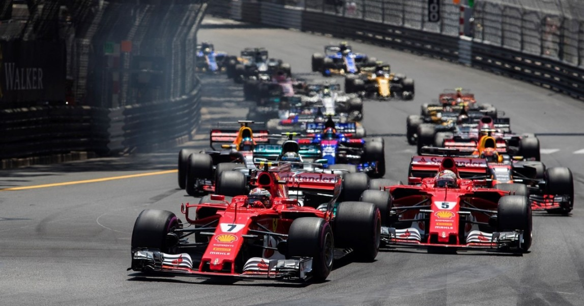

Первое автомобильное соревнование Датой начала истории автомобильного спорта можно назвать 1894 год. В конце 1893 года (19 декабря) издатель парижской газеты «Le Petit Journal» Пьер Жиффар объявил о проведении первой автомобильной гонки (до этого, в 1887 году, прошёл конкурс «колясок, передвигающихся без посторонней помощи» с одним единственным участником). Её старт был назначен на 22 июля 1894 года. Участвующие «безлошадные экипажи» должны были преодолеть дистанцию в 126 км от Парижа до Руана менее чем за восемь с половиной часов. Критерий победы выглядел довольно расплывчато: первый приз в 5000 франков должен был достаться экипажу, который продемонстрирует «наилучшую комбинацию безопасности, экономии и удобства.
.
.
Легенды автоспорта:
- Bugatti Type 35. В августе 1924 г. на Гран-при Лиона компания Bugatti представила модель Type 35. Под капотом машины располагался рядный восьмицилиндровый бензиновый двигатель объемом 2 л и мощностью 99 л.с.
- Alfa-Romeo 8C 2300.На Alfa-Romeo 8C 2300 устанавливался двигатель объемом 2,3 л и восемью цилиндрами, откуда и обозначение 8С. Сам двигатель впервые появился в 1931 году на гонке Mille Miglia. .
- Ford GT40. В начале 60-х годов в Ле-Мане безраздельно хозяйничали машины Ferrari (модели 250, 275 и 330): с 1960 по 1965 год одержано шесть побед подряд.
- Porsche 956. В 1981 году компания Porsche начала разработку новой модели автомобиля, подготовленной к требованиям Группы С. Модель Porsche 956 дебютировала в марте 1982 года..
- McLaren-Honda MP4/4. Мощность двигателя составляла около 900 л.с. при 12500 об/мин. Болид весил 540 кг и оснащался шестиступенчатой трансмиссией.
- Lancia Delta. В 1985 году для участия в чемпионате мира по ралли компания Lancia разрабатывает модель Delta S4 с двигателем 1,8 л.
- . .
- . .
- ..